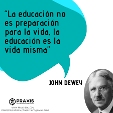
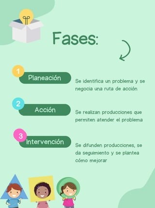
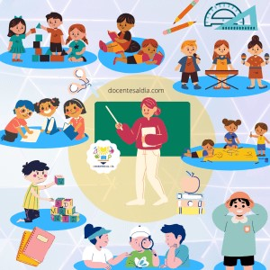
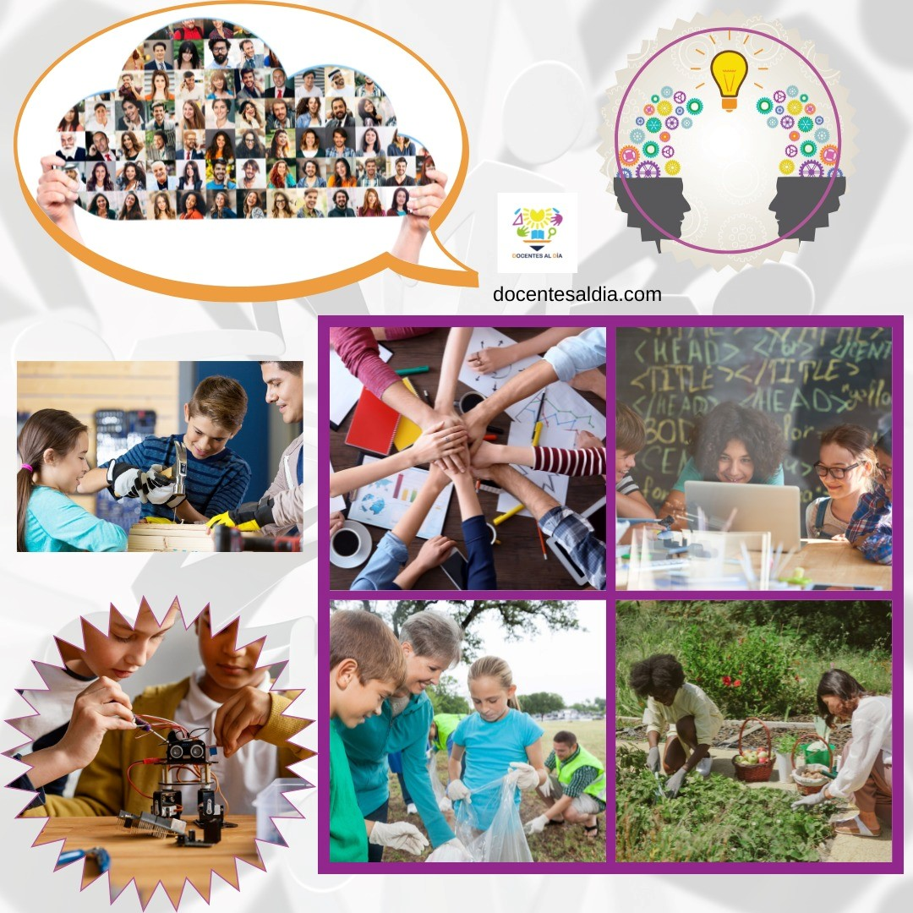
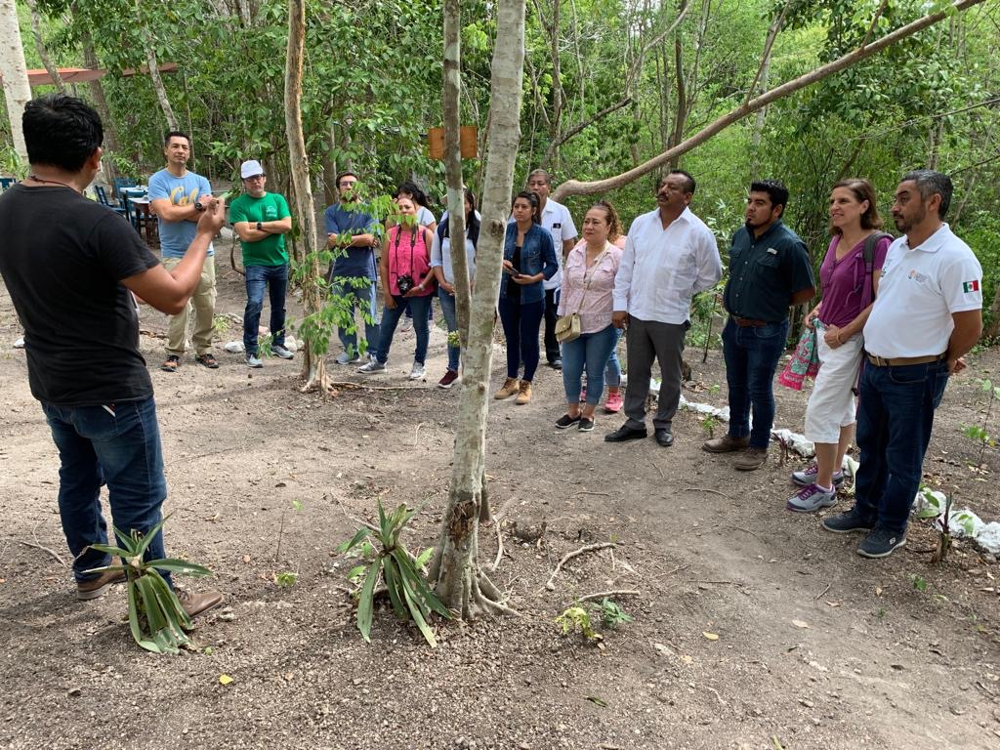

| Esta metodología se desarrolla como respuesta a la necesidad de integrar el aprendizaje en contextos reales, buscando relevancia y aplicabilidad directa en la vida de los estudiantes. Inspirado en la educación progresista, su historia está relacionada con la obra de John Dewey, quien defendía que el aprendizaje debe partir de experiencias significativas y prácticas para los estudiantes. |  |
| Para planificar el aprendizaje basado en proyectos comunitarios, es esencial definir un propósito claro y conectado con el contexto de la comunidad. Se debe establecer un objetivo concreto, elegir un tema relevante, y estructurar etapas de investigación, desarrollo y presentación de resultados. La evaluación puede basarse en el proceso y en los productos, considerando la colaboración y el impacto en la comunidad. |  |
| El docente actúa como facilitador y guía, orientando el proceso sin imponer una única forma de trabajo. Los alumnos son protagonistas, tomando decisiones sobre cómo abordar el proyecto, investigando, colaborando y proponiendo soluciones. |  |
| Es crucial disponer de materiales que los estudiantes puedan adaptar y aprovechar según el contexto del proyecto. Los espacios de trabajo pueden variar entre el aula y la comunidad, ya que el aprendizaje ocurre tanto dentro como fuera de la escuela. |  |
| La interacción es fundamentalmente colaborativa, tanto entre estudiantes como entre estos y la comunidad. El trabajo en equipo, la discusión, y la colaboración con agentes comunitarios o familiares son esenciales para el éxito del proyecto. |  |
Consulte otras metodologías de aprendizaje o regrese al menú
Menú Aprendizaje en el Servicio